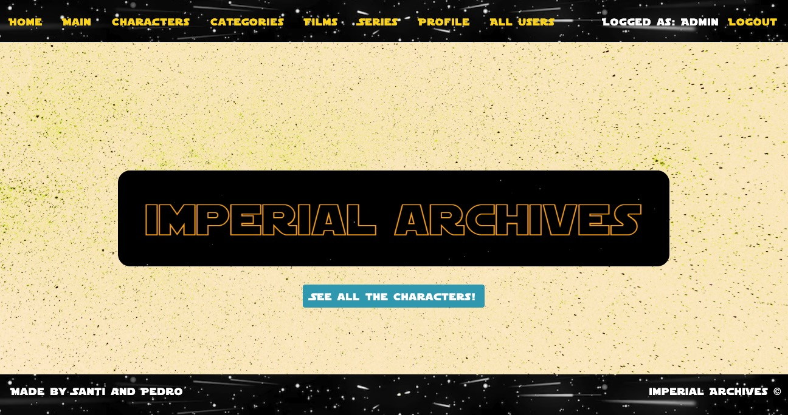
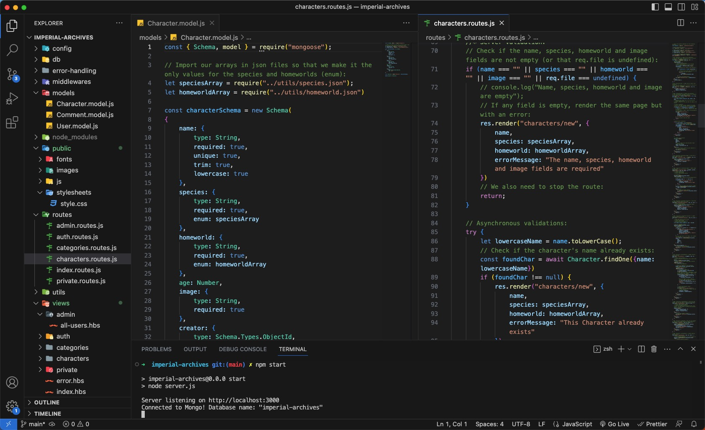

Imperial Archives
Imperial Archives is a social network where users can comment on different Star Wars characters, add as favorite, see info on all movies and series. Users can filter characters by their species or homeworld. Moderators can add new characters and edit them. Administrator can delete user if not moderator.
This was the Module 2 project of the Ironhack's Web Developer Bootcamp. It was built using HTML, CSS, Javascript, NodeJs, ExpressJs, Handlebars, Sessions & Cookies, Cloudinary and Multer, Bcryptjs and MongoDB.
We used a system of Routes and MongoDB models, which can be seen in the next image:
This project was made together with another student, which was a very good experience regarding Git and Github, since we had to do daily Pair Programming sessions, Git commits and Pull requests. We used Handlebars which is a Javascript library used to create reusable webpage templates. It was very interesting to render pages with this package.